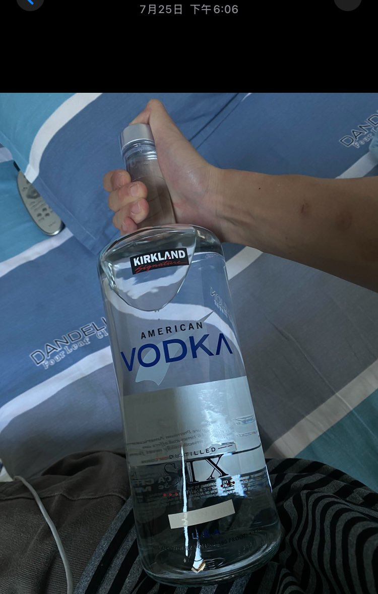
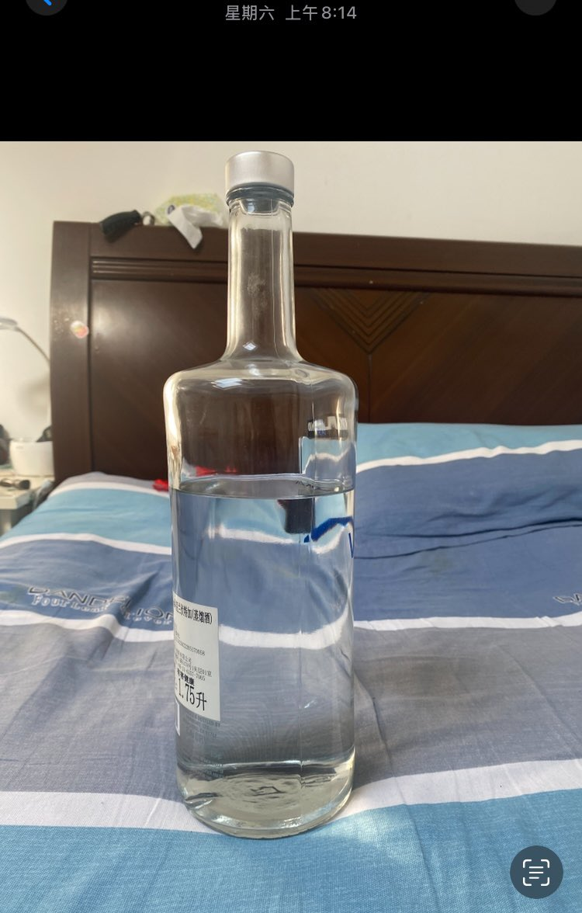
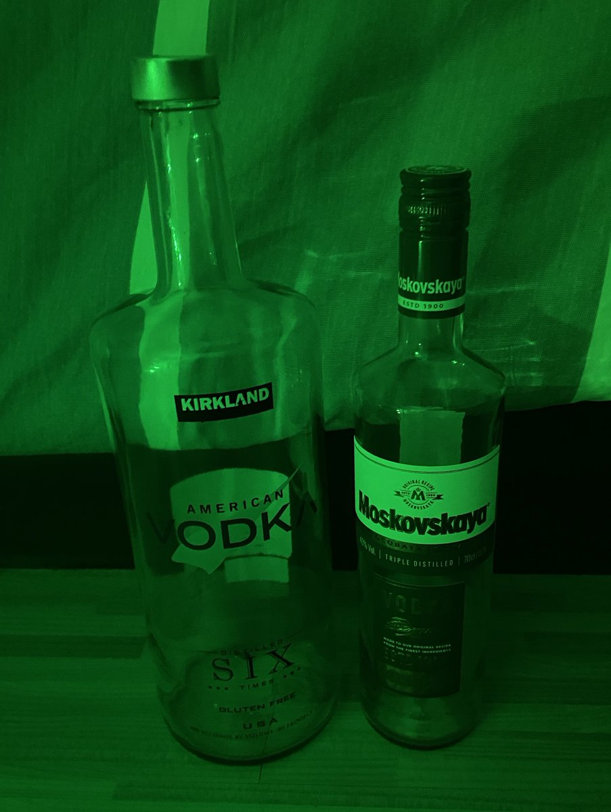
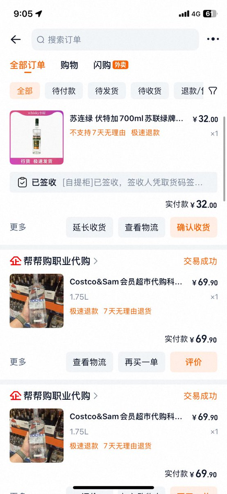

后来我确定自己死不掉 觉得自己牛逼得一塌糊涂啊 从25日到3日十天我因为曲马多和苯二氮卓连用榨干恢复了两天 一天晚上因为酒都喝完了我瘾还在犯就点了一扎大蓝带 常温的也没冰袋没喝爽不用多提 所以在七天我一共喝掉了两瓶1750MLkirkland伏特加 一瓶700毫升的伏特加 也就是连续日均600ML的饮酒量





我过了一段极度自毁和危险的几天 25日我
一晚上就喝了四分之一 我喝得太快以至于27日就快喝完。我又买了瓶一模一样的结果。每天的饮酒量都在400-700ML左右 以至于很多事我都失忆毫无印象了 唯独记得看见奈奈离世的消息后 悲愤交加 当时我已经喝的脑子不做主了吃掉了约20t阿普还有600mg曲马多 https://t.co/TUZ9BMDLl7
一晚上就喝了四分之一 我喝得太快以至于27日就快喝完。我又买了瓶一模一样的结果。每天的饮酒量都在400-700ML左右 以至于很多事我都失忆毫无印象了 唯独记得看见奈奈离世的消息后 悲愤交加 当时我已经喝的脑子不做主了吃掉了约20t阿普还有600mg曲马多 https://t.co/TUZ9BMDLl7